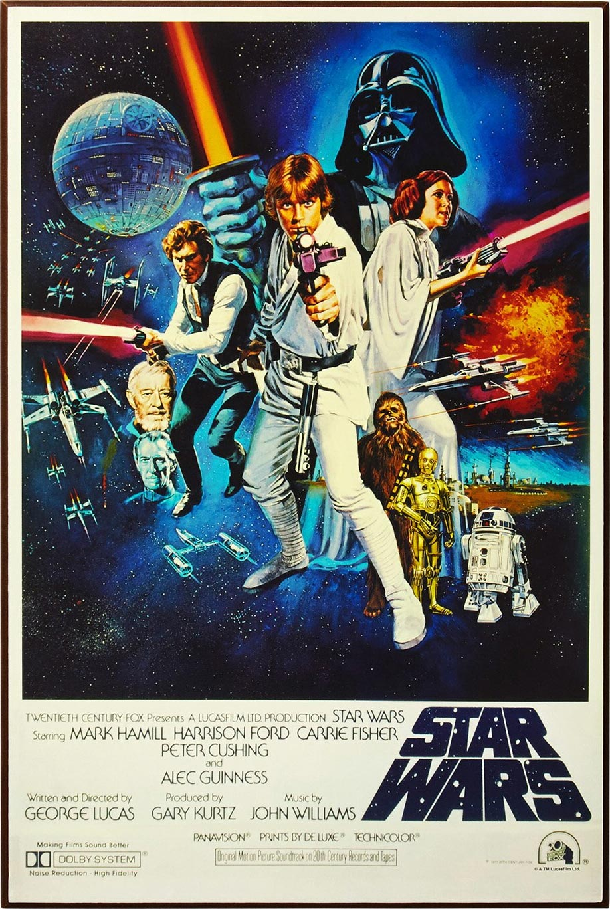

Star Was was created by George Lucas, with his first synopsis being written in January 1973. I believe Star Wars is one of the biggest terning point of the movie industry in the 70s. Star wars a new hope changed how people experienced a movie in that day with its cutting-edge sound and special effects. George Lucas also had a fan-cantered marketing approach that immersed you in the universe creating more brand loyalty.
Star wars is one of my favorite movie series because of the memories I have attached to it, when I was a little gril my dad would sit down and watch them with me and my brothers. Star wars was also the most populer game for us to play as kids when we had friends over, we would run around with our lightsabers in the backyard yelling different quotess from the movies. Below is a list of the first 6 star wars movies and links to their movie ratings.After Revenge of the Sith George Lucas sold the rights to Disney and was no longer the producer. You can see a drastic change in how the movies feel, and some people myself included see them as something entirely separate from the original ones.
The art that we have seen from the star wars series has had it's fair share of changes over the years, but one thing i like is that we have no doubt it belongs to the same franchise. In the first poster we don't even have a name but with the classic character front and center we automatically associate it with the movie series we love. The second poster is from the prequal series but still has the same nostalgic feel as the other while still staying relevant to the year it came out.
© 2025 Why I Love Star Wars